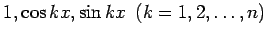
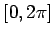
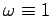
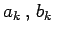
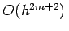

Inhalt Index DeskTop Bronstein

 Numerische Mathematik Approximation, Ausgleichsrechnung, Harmonische Analyse Harmonische Analyse Formeln zur trigonometrischen Interpolation
Numerische Mathematik Approximation, Ausgleichsrechnung, Harmonische Analyse Harmonische Analyse Formeln zur trigonometrischen Interpolation


Da das Funktionensystem  bezüglich des Intervalls  und bezüglich der Gewichtsfunktion  orthogonal ist, erhält man durch Anwendung der Fehlerquadratmethode im stetigen Fall gemäß (19.169) für die Ansatzkoeffizienten die Formeln
Die Koeffizienten , die nach der Formel (19.208) berechnet werden, heißen
FOURIER-Koeffizienten der periodischen Funktion f(x).
Lassen sich die in (19.208) auftretenden Integrale nicht mehr elementar oder nur mit großem Rechenaufwand integrieren oder ist die Funktion f(x) nur punktweise bekannt, dann kann man die FOURIER-Koeffizienten näherungsweise durch numerische Integration ermitteln.
Durch die Anwendung der Trapezformel mit den gleichabständigen N+1 Stützstellen
erhält man die Näherungsformeln
Im vorliegenden Fall periodischer Funktionen ist die Trapezformel in die sehr einfache Rechteckregel übergegangen. Diese ist hier von großer Genauigkeit, denn es gilt:
Ist f(x) periodisch und (2m+2)-mal stetig differenzierbar, dann hat die Trapezformel die Fehlerordnung .